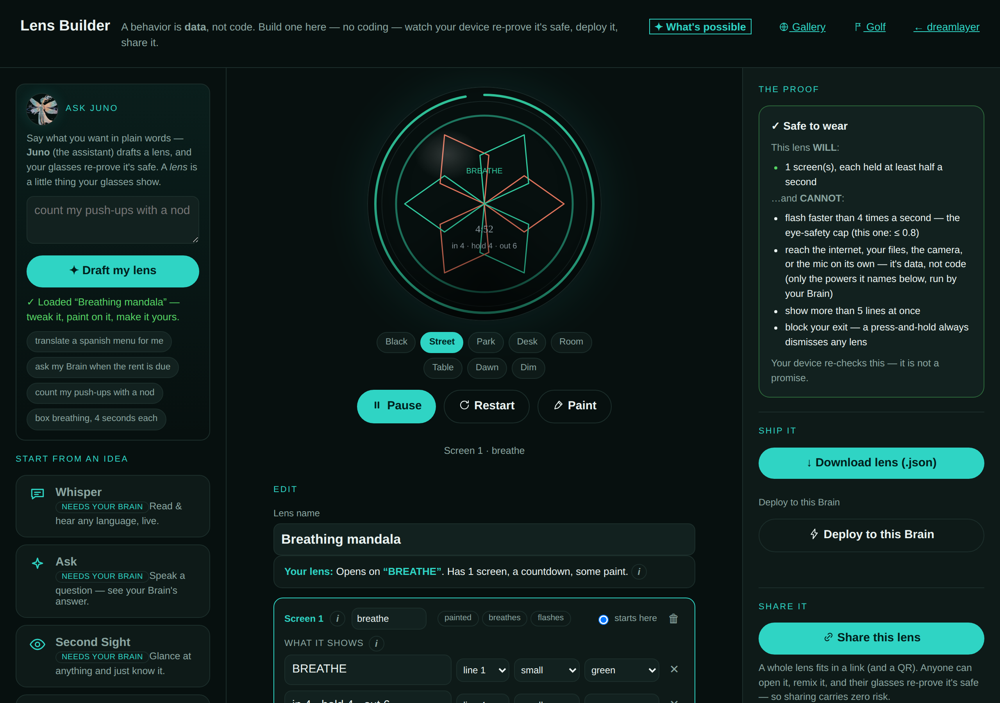
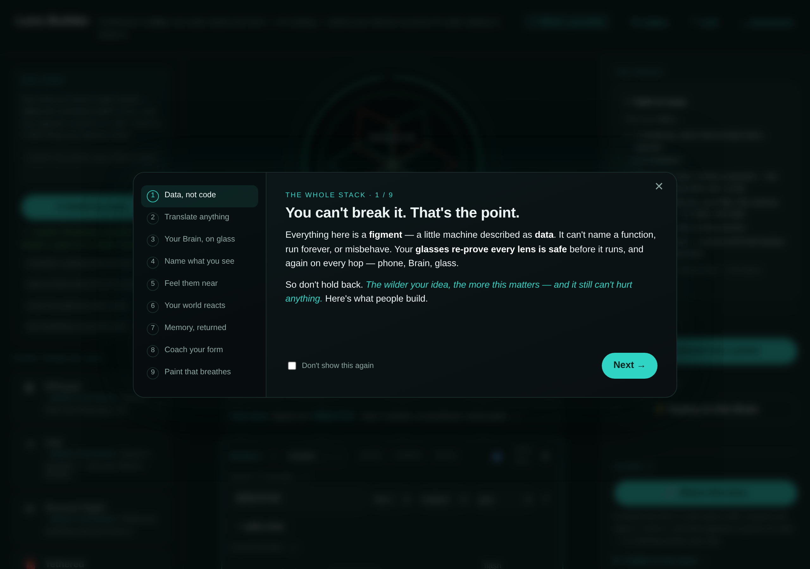

The Lens Builder — lenses without code
A lens (a figment — a small on-glass behavior) is data, not code: it cannot name a function, run forever, or misbehave, and the glasses re-prove it safe before running it. The Lens Builder turns that property into a product: anyone can compose a lens in the browser, watch it run on a live ring preview, and put it on their own glasses — no toolchain, no account.
It lives in two places, same page either way:
- The web — dreamlayer.app/lens-builder.html, a fully static page; nothing typed into it leaves the browser.
- Your Brain —
GET /dreamlayer/buildserves the identical page same-origin (the panel's Plugins view links it: "Build a lens →"), which is what makes one-click Deploy to my Brain possible.

What building feels like
- Recipes and presets — start from a wonder, not a countdown: interval timer, checklist ritual, box-breathing, a breathing mandala, and the brain-fed showcases (Whisper, Second Sight, Ember, Coach and friends). Presets marked as brain-powered come alive on a paired Brain; the builder simulates the feed so you can watch either way.
- The scene-graph editor — scenes, transitions, counters, and the
event grammar (taps, timeouts, IMU nods/shakes/peeks,
place:enter, bond presence) composed directly. - Paint on lenses — draw on the ring with bounded vector strokes. Strokes are data (stroke, vertex, and color counts are capped), so a painted lens re-proves safe exactly like any other.
- A live preview — the page runs your lens through
figment.js, a JavaScript twin of the Python stage interpreter, pinned to it line-for-line bytest_lens_builder.py. A background picker (Black, Street, Park, Desk, Room, Table, Dawn, Dim) sets the illustrative world behind the preview glass — a viewing preference kept in your browser's localStorage, deliberately not part of the lens: a share code carries only the figment itself.
Ask Juno
Type "a 5 minute countdown that pulses at the end" or "box breathing,
4 seconds each" and Juno drafts the lens: POST /dreamlayer/rc/compose
runs the offline intent parser — no cloud, no model — and returns a
budget-verified figment into the editor for you to review; it never
deploys anything itself. On the static page (no Brain), a client-side
recipe match answers the same phrasings. When neither can help, it says
so: "Juno couldn't turn that into a lens yet."
The first-visit tour — "What's possible"

A nine-chapter guided showcase opens on first visit (and from the "What's possible" button): translate anything, your Brain on glass, name what you see, feel them near, memory returned, coach your form, paint that breathes. Chapter one states the thesis: "Everything here is a figment — a little machine described as data... So don't hold back. The wilder your idea, the more this matters — and it still can't hurt anything."
The safety card, then the deploy
Before anything ships, the proof-carrying safety card renders the
machine-verified upper bound — the card literally begins "This behavior
CANNOT:" — no pulsing faster than the strobe cap, no flooding emits, no
extra lines, and it can never swallow the kill switch (double-long-press
banish lives below every figment). The network/files/camera/mic line is
now precise about the boundary: a lens cannot reach any of them on its
own — "only the powers it names below, run by your Brain" — and a new
"ASKS YOUR BRAIN TO" section lists every declared capability in plain
words ("answer a spoken question from your own memory (or the cloud, if
you allow it)"). The same card is available from the command line:
dreamlayer figment safety <file>.
Deploy to my Brain posts the lens to POST /dreamlayer/rc/import. The
Brain trusts nothing about the author: it re-runs the safety screen,
re-verifies every budget, mints a fresh id, and re-signs the figment
with its own key before staging it.
One deliberate security choice makes this safe: every /dreamlayer/build*
response carries no CORS headers. A cross-origin page can never read
the Brain's pairing token; one-click deploy works precisely because the
builder is served by the Brain, same-origin, with the token injected
only for localhost requests — the same rule the panel follows.
Share a lens in a link
"Share this lens" encodes the whole figment into a URL (and a scannable
QR): base64url of the lens itself, nothing hosted anywhere. Whoever opens
it gets a remix banner and a live preview, and if they deploy it, their
glasses re-prove it safe — sharing carries zero trust. The encoder is
mirrored byte-for-byte in the registry Worker (test_qr_parity.py), which
is what makes the community layer verifiable.
The loop: glass to Brain and back
A running lens is not sealed off from the rest of the stack — two narrow, rate-limited wires connect it:
POST /dreamlayer/rc/feed {text, source}— the host streams one line into the lens's{slot}(a translation, a camera label, a resurfaced memory). A lens can also carry up to eight named slots ({slot:translation},{slot:langs}...) so one screen holds several live channels; the orchestrator's own bridge feeds each by name (the HTTP route fills the default slot).POST /dreamlayer/rc/emit {tag, text}— the lens speaks back, under a capability contract: three tags are host powers —ask(answer from your memory),translate, andlook(name what the camera sees) — and a lens may invoke one only if it declared it in its signedrequireslist. The author-time verifier refuses an undeclared emit before signing, and the Brain refuses it again at runtime, so a forged figment cannot invoke a power it never asked for. Any other tag is a free local signal (rep,round, a plugin's own beat) — acknowledged, never an error.
On the phone, lensRelay.ts closes the full circle — glass → Brain →
glass — over the BLE bridge (pinned by lens_relay.test.ts). The named
showcases ride exactly this loop: Whisper (live translation in the
slot), Second Sight (the camera's label), Ember (a memory,
returned). Today the Brain-side deploys record their BLE envelopes until
the glasses transport attaches — the loop's logic is closed and tested;
the radio is the seam.
Where the pieces live
| Piece | Path |
|---|---|
| The builder page | landing/lens-builder.html |
| The JS interpreter twin | landing/assets/lens/figment.js (LensKit) |
| Same-origin serving + compose/feed/emit/import | ai_brain/server/server.py |
| JS-Python parity tests | host-python/.../tests/test_lens_builder.py, test_qr_parity.py |
| Safety card / impersonation screen / golf referee | reality_compiler/v2/safety.py, impersonation.py, golf.py |